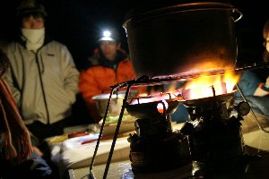
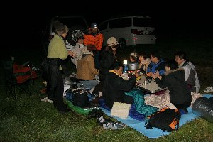
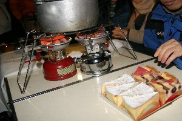
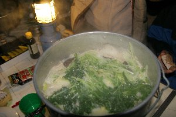

| このページは、2019年3月に保存されたアーカイブです。最新の内容ではない場合がありますのでご注意ください |
流星見会 | 2006年11月 |
|---|---|
| 冬は空気が澄んでいて、星を観測するのには丁度良いので、この時期になると夜の郊外に出かけたくなります。 おりしも「しし座流星群」が見られる金曜の夜、我々は恒例となっている朝霧高原へ出かけました。 今回は人数が多く、（ちょっと遅れていったから暗くて見えなかった） たぶん14〜15人位かな？ 寒い中での観測だったので、鍋でもやろうかと言うことで、料理長サクラさん（笑）による鍋が振舞われました。 豆乳鍋と、もう一つは名前忘れちゃった。 遅れて行ったので、丁度鍋が仕上がるタイミングだったから、なんか皆さんに悪いな〜と思いながら、早速頂きます。 温かくて美味しい〜〜 豆乳鍋って初めて食べたけど、なかなか美味しいですね。 | |
|  三つのバーナーが吼える |  こんな所でやってました |
| そして、数日早かったですが、いづみさんの誕生パーティーも行われ、ケーキ持ち込みです。キッカーの誕生日も近いため、これまたお祝いを。 （って、一緒にケーキ食べただけだけど。次回はローソク用意します♪） ケーキも美味しい〜〜 （準備して頂いたキッカーに感謝） 牧場片隅の空き地で、シートを広げ、テーブルを出して、はたから見たら怪しい集団だったでしょう。 この寒空に何やってんだ。ってね。 美味しいものを食べ、体も温まったので、本格的に流星観測を始めます。シートの上に、寝袋を並べて皆で川の字状態。 寝ながら星空を眺めます。 次から次へと流れ星が出るわけでは無いけれど、ジッと見ていると、夜空を横切る光の筋が現れます。 本当に一瞬で、誰かが「流れた！」と叫んでも、そちらに目をやる頃には、消えている。 自分だけ見れないと悔しいため、目を皿のようにして夜空を睨み、見えたら「流れた！」と、叫びます。 （*^_^*） | |
|  美味しそうなケーキでしょ |  これが投入鍋！もとい、豆乳鍋！ |
| 夜二時過ぎになって寒さも一塩、ちょっと雲も出てきたのでお開きとなりました。 この場所も、前回までは、もっと明かりが無くて良かったのに、今では明かりがチラホラと見えてしまうため、次回はもっと良い場所を探したいですね。 寒い中でのアウトドアときたら鍋は必需品です！ | |
| 写真＆コメント ｂｙ べっしー | |
当ホームページの文・写真等は無断転載禁止です。あしからず。
なお、ここに掲載されている情報は記事を書いた当時のモノです。
| このページは、2019年3月に保存されたアーカイブです。最新の内容ではない場合がありますのでご注意ください |